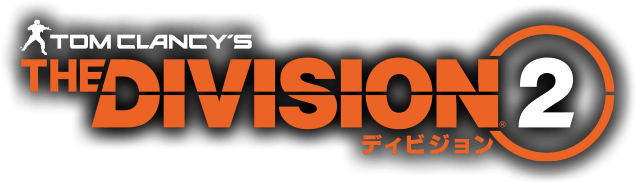
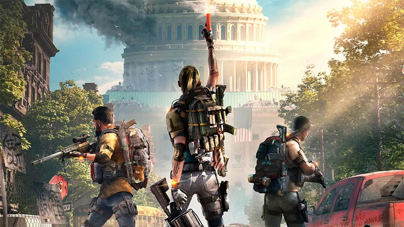

今回紹介する映像作品は『Division2』
危機に陥ったワシントンDC
『ディビジョン2』は実際のワシントンDCを初めて1:1スケールで再現し、
革新的にリアルなマップを実現。
ランドマーク、自然風景、周辺地域、敵の隠れ家などが緻密に描かれている
魅力
リアルに再現されたワシントンD.C.
緻密に織り込まれたフィクション
アメリカを崩壊の危機に導いたバイオ事件『ドルインフル』
その中で生まれるヒューマンドラマは面白く
観光シュミレーターとしても優秀です。
またエンドコンテツも底が深く、いつまでも崩壊したワシントンD.C.を堪能することができます。
あとがき
ディビジョンは21年3月現在遊んでいるゲームでまだまだ紹介したい要素も多いので今後も別の投稿をしていくと思います
著作権等
© 2018 Ubisoft® Entertainment.
All Rights Reserved.
Tom Clancy’s The Division 2®, Ubisoft®, and the Ubisoft® logo are
trademarksof Ubisoft® Entertainment in the U.S. and/or other
countries